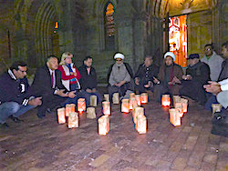

|
Friends,
The Fellowship of Reconciliation-USA joins individuals, faith communities, organizations and nations around the world in decrying and mourning this latest display of the violence that permeates our globe.
Along with our prayers for Paris where 129 have lost their lives, we pray for Beirut where 43 were killed, and Baghdad where 26 died in the same 48-hour period. We pray for Syrians who are now being subjected to increased air strikes.
 We pray for and mourn with all persons and communities around the world who are suffering from violence. In the days after these attacks in Beirut, Paris and Baghdad, we saw that the empathy offered to France was of a greater magnitude than that offered to Beirut or Baghdad. This is evidence for why we must continue to lift up the message emanating from Ferguson, Oakland, Baltimore and beyond: We pray for and mourn with all persons and communities around the world who are suffering from violence. In the days after these attacks in Beirut, Paris and Baghdad, we saw that the empathy offered to France was of a greater magnitude than that offered to Beirut or Baghdad. This is evidence for why we must continue to lift up the message emanating from Ferguson, Oakland, Baltimore and beyond:
Black lives matter. Brown lives matter. Their suffering should be mourned and addressed with the same compassionate response as white lives.
In our horror and grief, let us not forget that violence begets violence, and fear is an accelerant to that violence.
In French President Francois Hollande's declaration to Parliament yesterday that France is "at war," the world is facing a potential escalation of violence in all parts of the globe. We invite all persons of conscience to resist the myth that more killing will solve the problem. We urge all persons to seize their freedom to act in ways that promote life, not death. Though immoral and horrific, these attacks can never be seen as justification for similarly violent retaliation.
In the face of such a global crisis of violence, we may be tempted to give up our agency to larger actors of state, feeling the scale of the problem is too big for any one individual or group.
If we were to do this, not just our democracy but also our souls would be at stake. No matter how grave the crisis, each individual, each community can counter the death cycle of war with inner transformation for peace and societal transformation of the root causes of war.
George Lakey's piece published yesterday in Waging Nonviolence describes eight nonviolent responses to terror, ranging from developing economic infrastructure at the grassroots -- as war is often fueled by the lack of meaningful work and the suffering that comes from poverty -- to unarmed civilian peacekeeping.
There are no easy answers to stem and stop the violence around the world that feeds dehumanization and leaves further brokenness in its wake. But we in the Fellowship of Reconciliation are firmly convinced that any further violence is not part of the answer.
Instead, we recommit to the way of compassion, resistance and activism.
Our crisis of refugees and displaced persons will now only intensify, and FOR is working actively with regional and national groups to prepare for Syrian refugee arrivals. As governors of 27 states are using these attacks to justify anti-immigrant sentiment and claim they will deny refugee resettlement in their states, we urge all FOR members and friends to use the hashtag #LetThemIn and advocate on behalf of refugees in the United States and abroad.
In the wake of these attacks, we are already seeing rising Islamophobia, and we call on all to stand in solidarity with our Muslim brothers and sisters and counter hate speech and hateful actions.
We know you are working at the grassroots level in your community. Please let us know what you are doing so that we may lift that up throughout the FOR network!
For 100 years, the Fellowship of Reconciliation has been dedicated to ending war and the root causes of war. The United States has been at war against terrorism for the last 14 years, and yet terror globally is increasing. As Phyllis Bennis of the Institute for Policy Studies has said, "Terrorism survives war; people don't."
We will remain committed to our mission to eradicate war and its causes in pursuit of a world where life is affirmed and peace is experienced by each individual.
We refuse to give into fear or despair. We stand together with people of faith and hope the world over who will continue to persevere for peace.
 Rev. Kristin Stoneking Rev. Kristin Stoneking
Executive Director
Fellowship of Reconciliation
Images: Banner at FOR's Shadowcliff headquarters for the Centennial celebrations; Beirut/Paris solidarity (Lion Multimedia Productions, Flickr, Creative Commons): a Muslim vigil in Detroit, Michigan, following the Paris attacks (Flickr user rezapci, Creative Commons); Syrian refugees at a Budapest, Hungary train station (Mstyslav Chernov, Wikimedia, Creative Commons). |